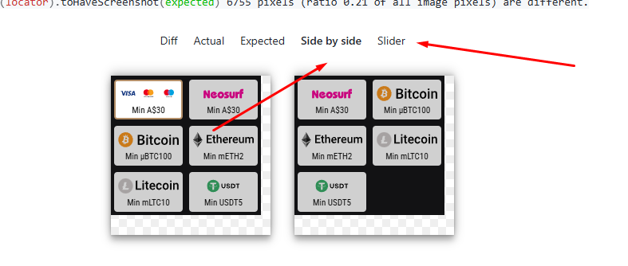

üé• Usage video tutorial
üíª Windows

üçè macOS

Welcome to the Infernal Guide of Testing.
Get the cursed test from GitHub
Requires Node.js, TypeScript, and Playwright.
First: open terminal and navigate to Desktop
cd ./Desktop
Clothe the repository
git clone https://github.com/RUSTEMATOR/depositModalMonitor.git
Enter the repository
cd ./depositModalMonitor
Install dependencies
npm install
Install TypeScript if not installed
npm install typescript --save-dev
Then install Playwright Chromium:
npx playwright install chromium
First: open terminal and navigate to Desktop
cd ./Desktop
Clothe the repository
git clone https://github.com/RUSTEMATOR/depositModalMonitor.git
Enter the repository
cd ./depositModalMonitor
Install Expresso library for Express VPN automation
brew install --cask sttz/tap/expresso
Install dependencies
npm install
Install TypeScript if not installed
npm install typescript --save-dev
Then install Playwright Chromium:
npx playwright install chromium
Ensure the following before running the test:
To run the test, execute:
npx playwright test
To see the test in action:
npx playwright test --headed
To update expected results, use:
npx playwright test --update-snapshots
To update expected results, use:
npx playwright show-report
The test checks deposit modal windows across multiple locales:
And for the following user groups:
Recommended comparison options:
